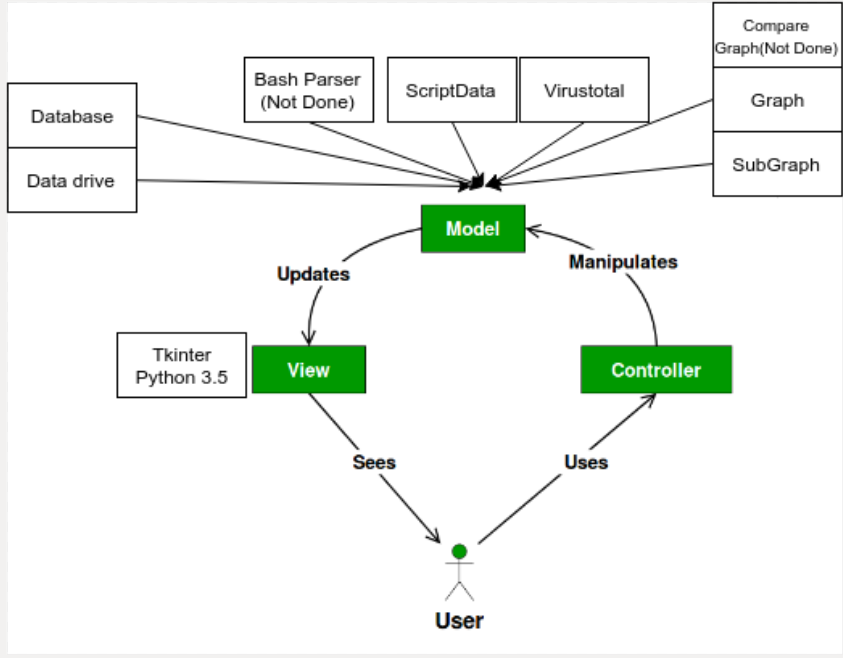
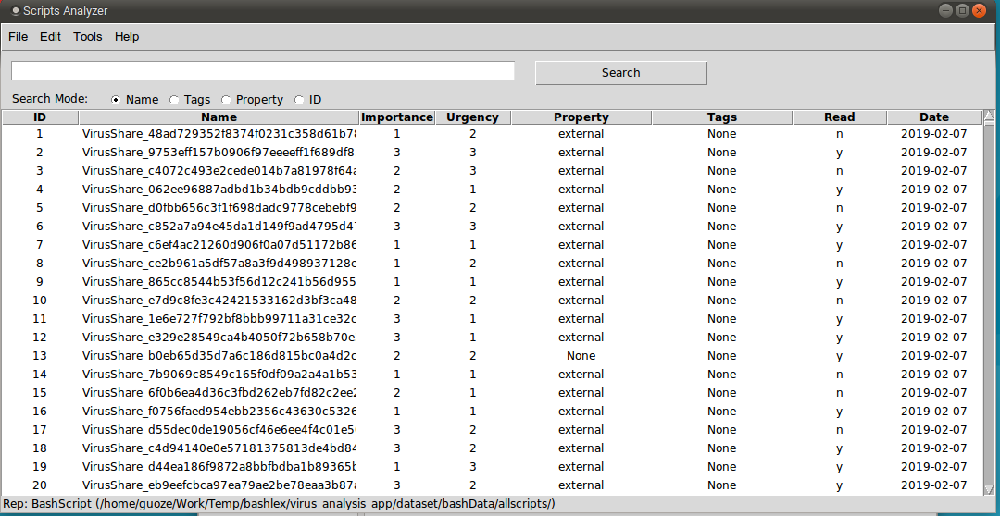
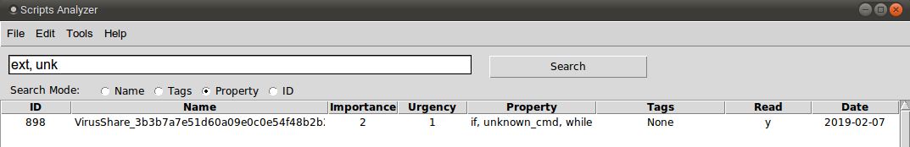
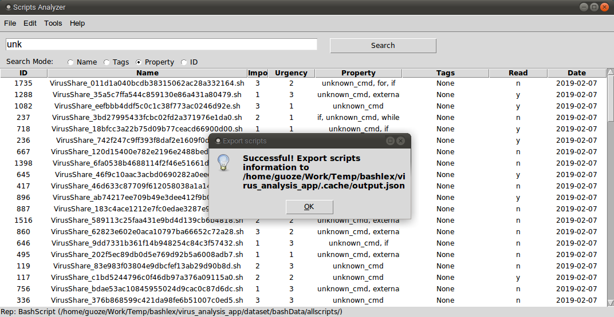
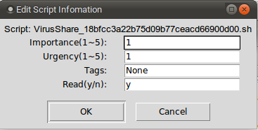
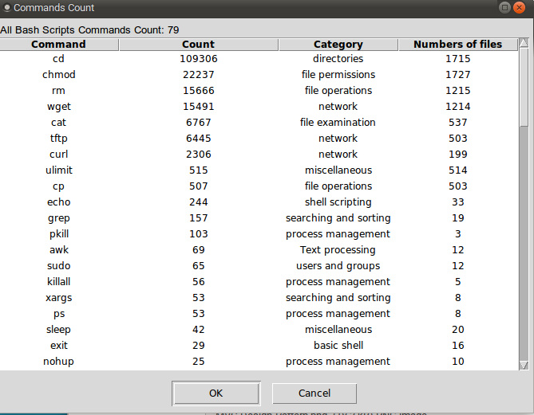
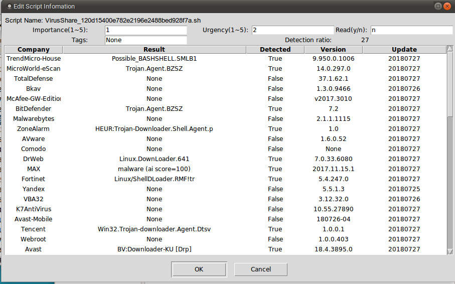

Application Framework
This application based on MVC design pattern.

- Bash Parser: Deal with the bash script, and get the AST grammar tree from the bash script code.
- Script Data: Analyze tool for the Bash scripts commands. (Count the Linux Commands)
- Virustotal: Based on the MD5 value for each bash script file to get the scripts detail information from the virtual total website.
- Graph: Generate the dot and pdf graph from the bash parser output.
- Database: Use sqlite3 in the python3.5 to save the scripts information in the database.
- Data Drive: Use the XML file to drive the application, then it is easy for us to change the configure in the application.
Instruction Manual
Run Application
When you first time to run this application in your computer, you need to download this application and set up the data set in the project root folder.
Setup Environment(Only First time)
git clone git@github.com:nsslabcuus/virus_analysis.git
cd virus_analysis/virus_analysis_app
./setdataset.sh
When you run the
./setdataset.shbash script, this script will download the dataset from the GitHub repository if you have the permission to access this data set repository. Please use python version > 3.5
python3.5 main.py
The main window will show like the followed picture.

Search function
Now you can search by ID, Importance, Urgency, Property, Tags, Read, Date. There is some information about the Name, Property, and Tags.
- Name: The scripts file name in the file system. You can open the script file by
Edit-->Open Script Code. By the way, you need to choose one of the script files in the table firstly. - Property: The field was added by the graph analyze tool, it added some information about this scripts. Please look at the information about this feature. BashGraph
- Tags: You can edit it by yourself, and add some identifier for each script you want to focus.
When you use the search function, you can choose one of them to search. The input data is a string. You can search two keywords together using split symbol ,. There is an example.

Menu bar
File
- New Repository: Build a new repository and import a new dataset.
- Open Repository: Open an existing repository and change the database.
- Save as JSON: Export the search result to a JSON file. In the project root folder, you can find
.cache/output.jsonfile.

Edit
- Edit information: Change the script information in the dataset. You can change the
Importance, Urgency, Property, Tags, Read, Date.

- Show Tags: Get all the tags which you used in this repository.
- Show script Path: Get the script path which you choose in the table.
- Show All commands count: Get all the commands from all scripts in this repository.
- Show All Linux commands count: Get all Linux commands from all scripts in this repository.

- Show Commands Count: Get the commands count for one Bash scripts.
- Open Scripts code: Open the script's code by gedit application.
- Open Scripts Graph: Generate and open the script graph by evince application.
- Scripts Detail: Get the detail information about this scripts information from the virtual total website.

Tools
- Generate All Commands Graph: This use to generate all the dot files for scripts in this repo.
- Update Script property: Update all the scripts property in this repository.